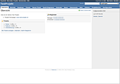

Redmine
Dieser Artikel wurde für die folgenden Ubuntu-Versionen getestet:
Ubuntu 14.04 Trusty Tahr
Artikel für fortgeschrittene Anwender
Dieser Artikel erfordert mehr Erfahrung im Umgang mit Linux und ist daher nur für fortgeschrittene Benutzer gedacht.
Zum Verständnis dieses Artikels sind folgende Seiten hilfreich:
Redmine  ist eine flexible Projektmanagement-Lösung, die auf Ruby on Rails aufbaut. Es kann für Benutzer- und Projektverwaltung, Diskussionsforen, Wikis, zur Ticketverwaltung und Dokumentenablage genutzt werden. In diesem Artikel wird sowohl auf die Version 0.x als auch auf die Versionen 1.x und 2.x eingegangen.
ist eine flexible Projektmanagement-Lösung, die auf Ruby on Rails aufbaut. Es kann für Benutzer- und Projektverwaltung, Diskussionsforen, Wikis, zur Ticketverwaltung und Dokumentenablage genutzt werden. In diesem Artikel wird sowohl auf die Version 0.x als auch auf die Versionen 1.x und 2.x eingegangen.
Funktionen:
Mehrere Projekte mit einer Installation nebeneinander verwalten
Rollenbasierte Benutzerverwaltung
Flexibles Ticketverfolgungssystem
Gantt-Diagramm und Kalender
Nachrichten-, Dokumente- und Dateimanagement
RSS-Feeds und E-Mail-Benachrichtigungen
Wiki pro Projekt
Forum pro Projekt
Zeitverfolgung
Benutzerdefinierte Felder für Fragen, Zeit-Einträge, Projekte und Benutzer
SCM-Integration (Subversion, Git, Mercurial, Bazaar und Darcs)
Ticketerstellung per E-Mail
LDAP-Authentifizierung
User self-registration support
Mehrsprachig
Unterstützung für verschiedene Datenbanken (MySQL, PostgreSQL usw.)
Redmine wird in der Praxis beispielsweise von den Entwicklern des Bildverwaltungsprogramms Shotwell genutzt.
|  |
| Weboberfläche von Redmine |
Installation¶
Die Installation aus den Standardpaketquellen ist der einfachste Weg der Installation. Allerdings muss beachtet werden, dass man je nach Ubuntu-Version eine andere Version erhält (siehe auch redmine):
Ubuntu 14.04: Redmine 2.4
redmine (universe)
 mit apturl
mit apturl
Paketliste zum Kopieren:
sudo apt-get install redmine
sudo aptitude install redmine
Datenbank installieren¶
Als Datenbank kann man beispielsweise SQLite verwenden. Die Einrichtung ist schnell und einfach erledigt. Man kann praktisch nichts falsch machen. Als Alternativen sind hier noch MySQL und PostgreSQL aufgeführt. Faktisch kann man fast jede Datenbank verwenden. Dies erfordert aber mehr Arbeit als die hier verwendeten Datenbanken, weil eine Datenbank-Anbindung ( z.B. redmine-sqlite ) benötigt wird.
SQLite¶
redmine-sqlite (universe)
mit apturl
Paketliste zum Kopieren:
sudo apt-get install redmine-sqlite
sudo aptitude install redmine-sqlite
MySQL¶
Hinweis:
Während der Installation werden mehrere Dinge abgefragt. Die Vorgaben sind in den allermeisten Fällen passend.
redmine-mysql (universe)
mysql-server
mit apturl
Paketliste zum Kopieren:
sudo apt-get install redmine-mysql mysql-server
sudo aptitude install redmine-mysql mysql-server
PostgreSQL¶
redmine-pgsql (universe)
postgresql
mit apturl
Paketliste zum Kopieren:
sudo apt-get install redmine-pgsql postgresql
sudo aptitude install redmine-pgsql postgresql
Hinweis:
Bei Verwendung von PostgreSQL ist zu beachten, dass man bei der Einrichtung entweder einen neuen PostgreSQL-Benutzer zur Einrichtung der Datenbank anlegt oder den standardmäßig von PostgreSQL eingerichteten Benutzer "postgres" angibt.
Versionsverwaltungsysteme¶
Redmine unterstützt verschiedene Versionsverwaltungssysteme:
Details zur Installation und weitere Informationen sind den genannten Artikeln zu entnehmen.
Anbindung mittels Passenger¶
Experten-Info:
Hier geht es um die Konfiguration der Apache-Module mod_rails und mod_rack. Da Redmine auf dem Ruby on Rails Framework aufbaut, ist dies erforderlich.
Zunächst muss noch folgendes Paket installiert werden:
libapache2-mod-passenger (universe)
mit apturl
Paketliste zum Kopieren:
sudo apt-get install libapache2-mod-passenger
sudo aptitude install libapache2-mod-passenger
Nach der Installation muss folgende symbolische Verknüpfungen gesetzt werden:
sudo ln -s /usr/share/redmine/public /var/www/redmine
Als nächstes wird die Datei /etc/apache2/mods-available/passenger.conf um folgende Zeile erweitert:
1 | PassengerDefaultUser www-data
|
In der Datei /etc/apache2/sites-available/default werden noch folgende Zeilen ergänzt:
1 2 3 4 | <Directory /var/www/redmine> RailsBaseURI /redmine PassengerResolveSymlinksInDocumentRoot on </Directory> |
Anschließend muss die Seite noch aktiviert und die Konfiguration aktualisiert werden:
sudo a2enmod passenger sudo service apache2 restart
Manuell¶
Man kann sich Redmine auch direkt von der Projekt-Homepage herunterladen und installieren. Der Vorteil ist, der das man theoretisch unter jeder Ubuntu-Version jede Redmine-Version installieren kann. Dieses ist allerdings deutlich umfangreicher als die hier vorgestellten Anleitungen. Wer sich nicht abschrecken lässt, dem sei angeraten, sich dazu die offizielle Anleitung näher anzusehen und diese Schritt für Schritt abzuarbeiten. Man muss allerdings mit einer Reihe von Fehlern rechnen, die man auf dem Weg zum Ziel bewältigen muss.
Konfiguration¶
Git¶
Um Git als Versionsverwaltungssystem zu verwenden, muss in den Projekteinstellungen ein Repository hinzugefügt werden. Das Git-Archiv muss sich auf dem lokalen Server befinden. Es muss der absolute Pfad zum Ordner .git des Archivs eingetragen werden. Beispiel:
1 | /home/BENUTZER/Git_Projekt/.git |
Erweiterungen (Plugins)¶
Redmine kann mit Erweiterungen ergänzt werden, jedoch ist immer daran zu denken: Je mehr Erweiterungen man installiert, desto schwieriger wird es später, Redmine zu aktualisieren. Im offiziellen Wiki gibt es eine List der Erweiterungen . Erweiterungen werden grundsätzlich in den Ordner /usr/share/redmine/plugins/ (bei Redmine 2.x) oder /usr/share/redmine/vendor/plugins/ (bei Redmine bis einschließlich Version 1.x) abgelegt. Viele dieser Erweiterungen werden auf Github gehostet. Diese kann man sehr einfach installieren und aktuell halten.
Klonen einer Erweiterung aus Github:
cd /usr/share/redmine/plugins git clone git://github.com/user_name/name_of_the_plugin.git
Aktualisieren einer Erweiterung von Github:
git pull origin master
Einige Erweiterungen brauchen Datenbankanpassungen, und dafür muss das Migrationsscript aufgerufen werden:
Redmine bis einschließlich Version 1.x:
rake db:migrate_plugins RAILS_ENV=production
Redmine 2.x:
rake redmine:plugins:migrate RAILS_ENV=production
Um die Installation der Erweiterungen abzuschließen, muss man Redmine neu starten:
sudo service apache2 restart
Es ist empfehlenswert, die Readme-Dateien der Erweiterungen sorgfältig durchzulesen und diesen Installationsanleitungen zu folgen. Einzelne Erweiterungen benötigen noch, je nach Umfang der Erweiterung, weitere Schritte.
Themes¶
Um das Aussehen von Redmine zu verändern, gibt es einige Themen, die man herunterladen und installieren kann. Eine Liste der Themen findet man auf der offiziellen Wikiseite Theme List von Redmine. Ein Archiv entpackt man in /usr/share/redmine/public/themes/. Nun muss man Redmine "neu starten" (siehe Plugins). Das installierte Thema kann nun unter "Administration -> Einstellungen -> Anzeige -> Thema" ausgewählt werden.
Nutzung¶
Man hat mit Redmine die Möglichkeit, Projekte zu erstellen und diese in Redmine komplett zu verwalten. Die zuständigen Benutzer erhalten durch eine feingradulierte Zugriffskontrolle ihre jeweils benötigten Rechte. Man kann innerhalb eines Projektes beispielsweise
mit Hilfe eines Issue-Tracking-Systems Fehler sammeln
Dokumente hinterlegen, z.B. ein Pflichtenheft
ein Wiki zur Dokumentation anlegen
einen Newsfeed einrichten um auf wichtige Neuigkeiten aufmerksam zu machen
eine Versionsverwaltung einbinden und noch andere vieles mehr
Durch Redmine muss man nicht mehr verschiedene Server aufsetzen und diese einzeln verwalten, sondern kann alles zentral in einem System erledigen. So kann man sich schnell einen Überblick über das Projekt verschaffen. Eine detaillierte Übersicht zur Nutzung und Konfiguration bietet die offizielle Dokumentation .
- Erstellt mit Inyoka
-
 2004 – 2017 ubuntuusers.de • Einige Rechte vorbehalten
2004 – 2017 ubuntuusers.de • Einige Rechte vorbehalten
Lizenz • Kontakt • Datenschutz • Impressum • Serverstatus -
Serverhousing gespendet von